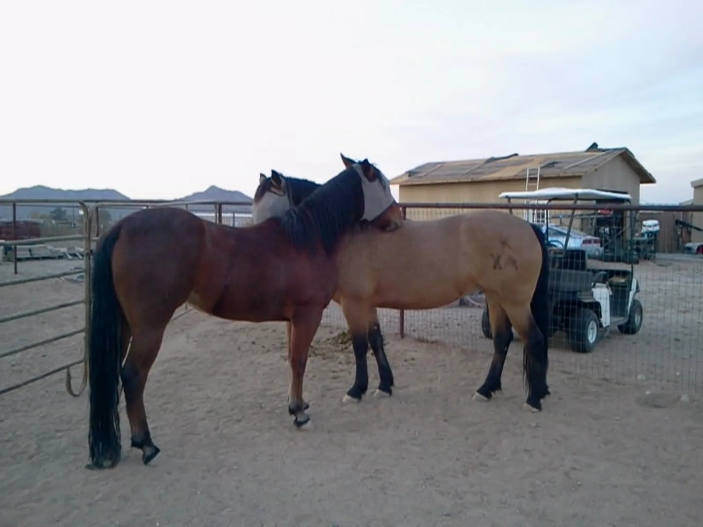

Every animal's life depends on people like you.
Whether you have money, time, a home, or just a willingness to care, there's a way for you to make a difference. Choose the path that fits.
Give Money
100% of donations go directly to animal care—feed, medical, facility. Tax-deductible. Every amount helps.
Learn more →Foster an Animal
Provide 2–8 weeks of temporary care while an animal recovers or waits for adoption. We supply everything.
Apply to foster →Adopt
Find a forever home for a rescued animal. We match you carefully and support you for life.
Browse available animals →Volunteer
Feed, build, transport, post, or care for animals directly. No experience needed. Consistency matters.
Apply to volunteer →These animals have already been let down once.
Every dollar, hour, and caring gesture tells them something different this time. Consistency, reliability, and genuine care are what rebuild trust. That's what we offer. That's what we need from you.
No staff overhead
We run 100% on volunteers and donated resources. Every dollar you give works directly for the animals—no salaries, no administrative bloat.
Real, lasting change
Rescue isn't a transaction. When you foster, adopt, or volunteer, you're committing to change an animal's life forever.
Transparency
We're small enough to know every animal by name, big enough to make real impact. Ask us anything about where your help goes.
Ready to choose your path?
Start with one action. That's how movements begin.